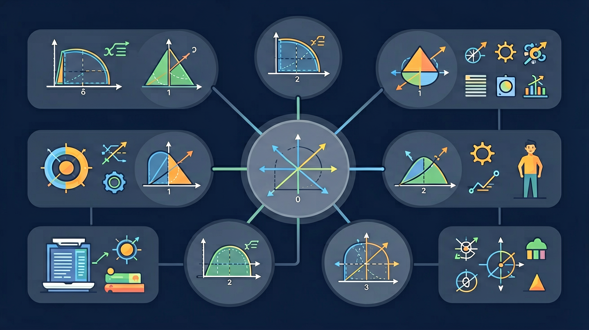

❓ 为什么扇形的面积公式里有个1/2，但弧长公式没有？
❓ 圆心角越大弧长就越长，那面积是不是也一定越大？
❓ 组合图形里算弧长时，要不要先减去直线边的长度？
学完这一课，这些问题你都能自信地回答。
🎯 能说出弧长公式与扇形面积公式的推导过程
🎯 能判断给定图形中哪些部分需要用到弧长或扇形面积计算
🎯 能分析组合图形中弧长与面积的叠加或扣除关系

1. 半径为r的圆，周长是？
2. 半径为r的圆，面积是？
3. 圆心角360°对应完整的圆，那么圆心角n°对应弧长占圆周长的比例是？
你要给圆形蛋糕的一块（扇形）描边——And切了60°的一块，弧边有多长？；But60°只是360°的1/6，所以弧长是整个圆周的1/6；Therefore弧长 = (圆心角/360°) × 2πr，这就是弧长公式的直觉！
圆O半径r=6，圆心角∠AOB=60°，弧AB的弧长是？
弧长为3π，半径为9，求圆心角度数？
披萨店要计算不同份额的披萨面积——And切成6份的披萨，每份面积是总面积的1/6；But如果圆心角不均匀，每份面积就按角度比例分配；Therefore扇形面积 = (圆心角/360°) × 圆面积！
扇形圆心角120°，半径r=3，求扇形面积？
已知扇形弧长为4π，半径r=6，求扇形面积？
如图，在扇形OAB中（圆心角90°，r=4），加上三角形OAB，求整个图形的周长（外轮廓）？
某公园要设计一个扇形喷水池，圆心角为150°，外弧半径R=10米，内弧半径r=6米（环形扇形）。
1. 半径r=12，圆心角30°，弧长为？
2. 扇形面积S=8π，半径r=4，求圆心角n=？
3. 圆心角为60°时，扇形面积与整圆面积之比是？
4. 两个扇形半径相同（r=5），圆心角之比为2:3，则弧长之比为？
高中数学中用弧度制代替度数制，弧长=αr更简洁，与微积分完美衔接
摩天轮转过一定角度时，吊舱走过的弧长计算——实际工程中的弧长应用
圆锥侧面展开后是扇形，侧面积=母线×底面圆周/2，与扇形面积公式的联系
地球上两点沿经线的距离计算，就是用弧长公式（地球半径≈6371km）
先独立作答，再点选项查看对错与错因。
若扇形圆心角扩大为原来的2倍，半径不变，则：
半径为5cm，弧长为4π cm的扇形面积是：
制作扇形纸伞时，若保持弧长不变，将半径从30cm增加到60cm，则：
钟表分针长10cm，15分钟扫过的扇形面积为____cm²
答案：25π
15分钟对应90°圆心角，S=90×π×10²/360=25π
扇形半径为8dm，面积为16π dm²，对应的弧长为____dm
答案：4π
由S=αr²/2得α=π/2，L=αr=4π
关于弧长与半径的关系，正确的是：
比较6寸(直径15cm)和9寸(直径23cm)披萨的扇形面积
将扇形拆解为弧长和三角形面积两部分理解
弧长是圆周的一部分，面积是圆面积的一部分
对比弧长公式(l=nπr/180)与扇形面积公式(S=nπr²/360)的结构差异
用折扇展开的动画展示圆心角与弧长/面积的关系
将公式迁移到环形跑道、披萨切片等实际问题中
✅ 强调所有公式中r均为半径
💡 混淆圆的相关公式
✅ 用钟表指针转动演示比例关系
💡 不理解公式的几何意义
口诀：圆心角n派r除以一百八，面积再加r方不落下
类比：像切蛋糕，弧长是蛋糕边缘的长度，面积是整块蛋糕的大小
半径为6cm，圆心角60°的扇形弧长是？
下列哪个是扇形面积公式？
(升学题)圆心角120°的扇形面积为12π，其弧长为？
(迁移题)钟表分针长10cm，30分钟扫过的面积是？
环形花坛内圆半径3m外圆5m，求1/4环形的面积
💡 用单位面积拼扇形近似，对照公式。
外链：https://phet.colorado.edu/sims/html/area-builder/latest/area-builder_zh_CN.html
开放任务：用三步写出你如何向同学讲清「弧长与扇形面积」。